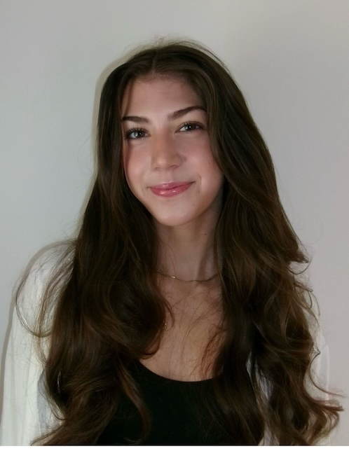

Get to know me!
About Me
Hello! My name is Kate Witham. I am currently a senior at the University of Massachusetts Amherst where I am pursuing a bachelors degree in Political Science with a minor in English. I am also taking coursework to fulfill the Professional Writing and Technical Communications Certificate.
My Interests
As both a Political Science and English major, I am interested in the intersection betweeen politics and communication. Throughout my time at UMass Amherst, I have taken many courses that have allowed me to explore this interest as well as create new ones. Most notably, I have taken courses in political communication, as well as technical and professional writing.
In my free time, I enjoy reading and spending time with the people I care about. I also love to travel and explore new places and cultures. Recently, I studied abroad in Florence, Italy which was an incredible experience that broadened my perspective of the world. While I was living in Florence, I had the fortunate opportunity to travel to 14 countries including Budapest, Switzerland, Greece, and more. I also love animals and hope to adopt a cat soon!